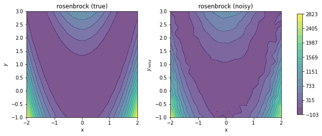

Multivariate Data Generation
Here, we generate example data for a multivariate function \(f(x,y)\). First, the class multivariate_examples is loaded.
[1]:
from insidapy.simulate.multivariate import multivariate_examples
Then, we instantiate the class using the built-in examples. The number of points per profile, the time span, and the noise addition method can be chosen.
[2]:
data = multivariate_examples( example='rosenbrock',
coefs=[1, 100],
npoints=20,
noise_mode='percentage',
noise_percentage=10)
Last, the produced data can be visualized using the plot method. We can save the figure using a path (save_figure_directory), a name (figname) and an some extensions (save_figure_exensions) as a list. By using show=False, the plot will not be displayed in a running code.
[3]:
data.contour_plot_2_variables( nlevels=15,
show=False,
save=True,
save_figure_directory=r'.\figures',
save_figure_exensions=['png'])
[+] Saving figure:
->png: .\figures\rosenbrock.png

Last, we can export the data to an Excel spreadsheet using the export_to_excel method.
[ ]:
data.export_to_excel(destination=r'.\data')